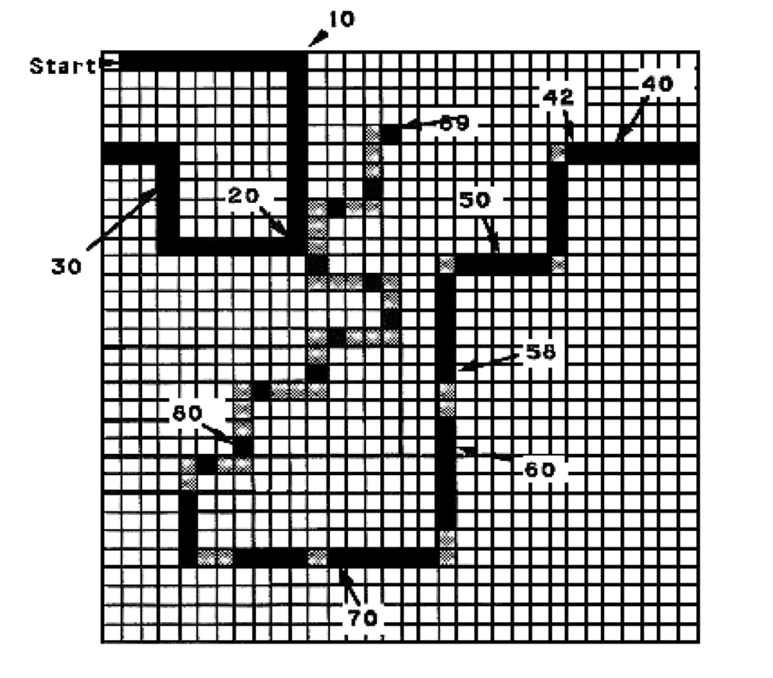

Ant Farm Programming Problem
1. Background
We ask you here to build an evolutionary system that allows to evolve an ant to prowl over a 2D grid of cells with
toroidal boundary conditions (wrap-around), following trails of food. One trail that has become something of a de
facto standard is the "John Muir" trail illustrated in the following figure:

Cells are either empty or full (the light gray cells in the figure illustrate the optimal path, but are as empty as
blank ones). The ant starts in the cell marked Start, facing right ("east"). Thereafter it is always in a
cell and facing in one of the four possible directions. At the beginning of each step it gets one bit of sensory
information: whether there is food in the cell in front of the cell it currently occupies (i.e., the cell it would
move to if it moved forward). At each time-step it has one of the four possible actions. It can (F) move
forward one cell; (R) turn right ninety degrees without changing cells; (L) turn left ninety degrees
without changing cells; or (N) do nothing. If an ant moves onto a food-cell, it consumes the food and the
food disappears; when the ant leaves that cell, the cell is empty. The fitness of the ant is rated by counting how
many food elements it consumes in 200 time-steps. There are 89 food cells in the John Muir trail.
We provide a JSON version of the John Muir trail here.
2. Problem
- The sensory-motor coordination for the ant can be implemented using a finite state automaton (FSA). Design a
'genetic encoding' representation, specified by a fixed-length bit string, that encodes ant sensory-motor FSA
transition
tables. Then, by hand, try to design the best possible ant for the John Muir trail. Show the encoding and the
corresponding FSA state-transition table and diagram. What fitness does your ant controller score? Note:
A blind ant with an 89 state FSA could traverse that particular trail perfectly -- but would probably get very
lost on another trail. Limit yourself to, at most, a 16-state FSA.
- Does your ant use the N operation? Under what circumstances might the N operation be useful?
- How many different individuals are possible in your representation?
- Generalize your representation to allow 2^n states. Express the number of bits in your representation,
and the
number of possible individuals, as functions of n.
- Write an evolution program that can evolve individuals (for the John Muir trail) using your representation.
Include multi-point crossover and mutation. Decide on a fixed number of states with which to run the program.
(You do not have to limit yourself to 16 states this time, but think twice before making it too large.) Write an
outline in English of how your code works and what representations you use. Tell us about the algorithm for
selection of individuals for the next generation. Run your system and plot how fitness increases by generation.
- Generate some tables on how the overall fitness varies for different population sizes, different parameters for
what proportion of the fittest individuals are retained, what proportion are used for reproduction, and what
levels of mutation are used.
- Take one of the best individuals your system produced (i.e., their FSA state-transition tables and diagrams) and
analyze its behavior. Does it demonstrate any particular specializations? How does it compare with your
hand-coded solution?
3. What We're Looking For
Please supply us with your source code in any language you are comfortable with, also please answer the
questions above in writing.